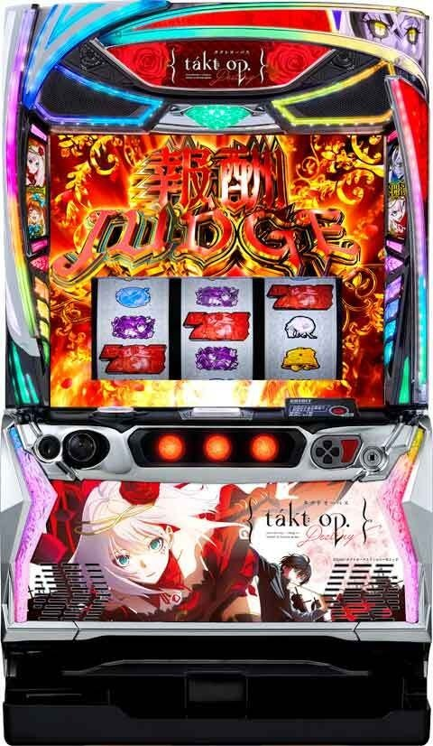
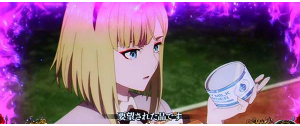
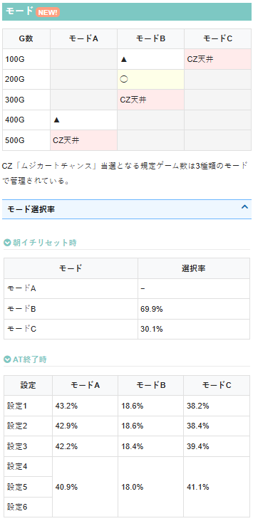
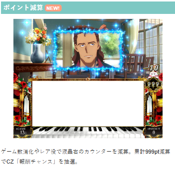
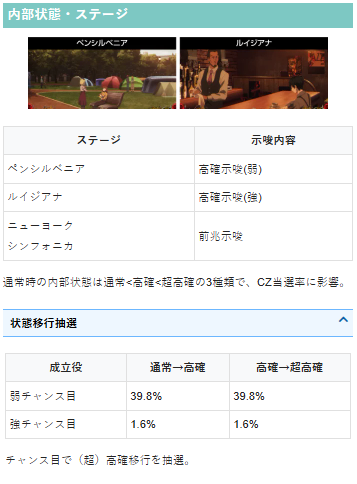

タクトオーパス デスティニー

【天井情報】
AT間天井
通常時を最大999G＋α消化でATに当選。
設定変更後・有利区間リセット後は699Gに短縮
CZ間天井
最大500G＋αでCZ「ムジカートチャンス」に当選。
設定変更時・有利区間リセット後は300G＋αに短縮（モードB以上濃厚）。
【リセット判別】
不明
【有利区間について】
差枚が+2400枚に到達するまでは上位ATに入ろうが有利区間はリセットされない？
エンディング等での有利区間リセット後は約30G継続する引き戻し区間（液晶に紫のエフェクトが発生）に突入し、約70%でオルフェループ（上位AT）に当選。
狙い目
※CZは「ムジカートチャンス」と「報酬チャンス」の2つがある。「報酬チャンス」ではCZ間天井はリセットされないがデータ機上ではリセットされる。正確なCZ間ハマりは液晶左下の数値を確認。
※液晶左下の数値→ムジカートチャンス間。リール右上の数値→規定ポイント減算で報酬チャンスの抽選。メニュー画面右上のG数→AT間。
【リセット狙い】
リセット0G狙い
中段に「リプ・リプ・タクト」を3回確認したらやめ。（MB1（リリベ）やBIG（赤7）が成立していないと判断）
BIGを引いた場合はもう一度同じ手順で消化。
※朝イチカニ歩きになるため、少しでも出禁リスクある店舗では非推奨。
AT間
400Gから
CZ間（ムジカートチャンス間）
250Gから
【ゲーム数天井狙い】
AT間
700Gから
※有利区間切断後はリセット時と同様の狙い目
CZ間（ムジカートチャンス間）
440Gから
※有利区間切断後はリセット時と同様の狙い目
【ポイント狙い】
残り150ptから
【ゾーン狙い】
100ゾーン
CZ0スルー 90Gから100ゾーン抜けまで
【示唆関連の押し引きについて】
不明
【有利区間関連狙い】
差枚+1500枚以上かつCZ0スルー 0Gから100ゾーン抜けまで
※差枚が+2400枚に到達するまでは上位ATに入ろうが有利区間はリセットされない？
やめ時
AT終了後は数ゲーム回して前兆が来なければやめ。（本前兆中にレア役等でCZ当選した場合は後から出てくる）
エンディングや上位AT後の液晶に紫モヤが掛かった状態（約30G継続）は上位AT突入のチャンスとなるので必ず消化。

その他
モード

ポイント減算

内部状態・ステージ

参考元
かめとうさぎのパチスロブログ
基本情報
- メーカー: アムテックス
- 機械割: 97.6% 〜 113.5%
- 導入開始日: 2026年05月11日（月）
- ゲーム性概要: ●差枚数上乗せタイプのAT機で『タクトオーパス デスティニー』が登場 ●通常時やゲーム数消化やレア役、ポイント減算でCZを抽選 ●AT中はCZ「ムジカートバトル」勝利で報酬ジャッジへ移行 ●報酬ジャッジは3GのSTで、小役を引くほど報酬が昇格！ ●エンディング移行後は上位AT「オルフェループ」移行のチャンス


打ち方
打ち方・小役
打ち方（小役狙い）
「最初に狙う絵柄」 押し順ナビなし時はフリー打ちでOK。
「レア役の停止例」 タクト揃いはMBの入賞目。
「リーチ目」 リーチ目出現でBIG濃厚だ。
変則押しはNG
押し順ナビなし時は、左リール第1停止での消化を推奨する。
ボーナス中の打ち方
基本的には押し順ナビ通りに消化すればOK。 リールが白くフラッシュした場合は、左リールにBARを狙おう。
［リール白フラッシュ］ 左リールにBARを狙って消化。
解析情報通常時
小役関連
小役確率
| 役 | MB1内部中 | MB2内部中 |
|---|---|---|
| リプレイ | 1/8.5 | 1/8.5 |
| ベル | 1/180.0 | 1/10.5 |
| 弱チャンス目 | 1/4.7 | 1/56.0 |
| 強チャンス目 | 1/256.0 | 1/256.0 |
| タクト揃い（MB入賞） | 1/20.0 | 1/89.5 |
| 小役以上合算 | 1/2.5 | 1/4.1 |
※ベルはリプレイフラグと14枚の合算確率
MB1内部中は黒夜隕鉄モード中のこと。MB2内部中は黒夜隕鉄モードとBIG（デスティニーorエピソード）中を除く状態が該当する。
「中リール狙え」
タクト揃い後・中リール狙え成功期待度
CZ・AT中の場合、タクト揃い後に中リール狙えが発生する可能性あり。成功すればタクト目が停止して強レア役として抽選される。
内部状態関連
高確・超高確
内部状態のポイント
通常＜高確＜超高確の順にCZ当選期待度がアップ
レア役で状態の昇格を抽選
内部状態昇格率
| 役 | 通常→高確 | 高確→超高確 |
|---|---|---|
| 弱チャンス目 | 39.8% | 39.8% |
| 強チャンス目 | 1.6% | 1.6% |
モード
モードごとのCZ天井ゲーム数
| モード | CZ天井 |
|---|---|
| 通常A | 500G |
| 通常B | 300G |
| 通常C | 100G |
通常時は滞在モードに応じて規定ゲーム数消化時のCZ当選期待度が変化。 規定ゲーム数到達時は前兆→連続演出を経由して、CZの当否が告知される。
CZ当選に期待できるゲーム数
100Gは大チャンス、200・300Gはチャンス
最大天井は500G
［設定変更時］モード振り分け
| モード | 振り分け |
|---|---|
| 通常A | ー |
| 通常B | 69.9% |
| 通常C | 30.1% |
設定変更後は通常B以上濃厚。約30%で通常C（100GでCZ当選）が選択される。
［AT終了時］モード移行率
| 設定 | 通常A | 通常B | 通常C |
|---|---|---|---|
| 1 | 43.2% | 18.6% | 38.2% |
| 2 | 42.9% | 18.6% | 38.4% |
| 3 | 42.2% | 18.4% | 39.4% |
| 4 | 40.9% | 18.0% | 41.1% |
| 5 | 40.9% | 18.0% | 41.1% |
| 6 | 40.9% | 18.0% | 41.1% |
AT後は約40%で通常Cが選ばれるため、100Gまで回すのはアリ。
前兆ステージ
ニューヨーク・シンフォニカ
レア役や規定ゲーム数消化から突入する前兆ステージ。 枠色が青＜緑＜赤と昇格するほど本前兆期待度がアップ、ラストは連続演出でCZの当否を告知する。
［青枠］
［緑枠］
［赤枠］
「連続演出」
クラシック前兆
運命のイルミから始まるクラシック前兆は本前兆の期待大！
ポイント抽選
ポイント抽選概要
通常時は毎ゲーム、1pt以上ずつポイントが減算されていき、0に到達すると報酬チャンスを抽選（ゲーム数表示は画面左下）。初期ポイントは999ptで、レア役が成立すれば大量減算のチャンスだ。
ポイント抽選
| ポイント減算契機 | 毎ゲーム1pt以上ずつ減算、 レア役は大量減算のチャンス |
|---|---|
| 初期ポイント | 999pt |
| 999pt減算時 | 報酬チャンスを抽選 |
減算ポイント振り分け
| 減算 | ベル リプレイ | 弱チャンス目 | 強チャンス目 | タクト揃い （MB） |
|---|---|---|---|---|
| 1pt | ー | ー | ー | ー |
| 10pt | 75.0% | ー | ー | ー |
| 30pt | 24.6% | ー | ー | ー |
| 50pt | 0.4% | 89.8% | ー | 88.7% |
| 100pt | ー | 10.2% | 93.0% | 10.2% |
| 200pt | ー | ー | 6.3% | 0.8% |
| 500pt | ー | ー | 0.4% | 0.4% |
| 1000pt | ー | ー | 0.4% | ー |
※ハズレ・1枚役は1pt固定
CZ・AT抽選
ムジカートチャンス当選率 通常中
| 役 | フェイク前兆 | 本前兆 |
|---|---|---|
| 弱チャンス目・MB | 0.4% | 0.4% |
| 強チャンス目 | 25.0% | 6.3% |
高確中
| 役 | フェイク前兆 | 本前兆 |
|---|---|---|
| 弱チャンス目・MB | 0.4% | 0.4% |
| 強チャンス目 | 66.8% | 33.2% |
超高確中
| 役 | フェイク前兆 | 本前兆 |
|---|---|---|
| 弱チャンス目・MB | 60.2% | 39.8% |
| 強チャンス目 | ー | 100% |
※MB…タクト揃い
通常・高確中の弱チャンス目とMBでの当選率は低いが、前兆が発生すれば1/2で本前兆になる。
フェイク前兆中は本前兆への書き換えが、本前兆中はムジカートチャンスのストックが抽選される。
ムジカートバトル当選時のAT昇格当選率
ムジカートチャンス当選時にATの書き換えが抽選されていて、当選時はムジカートチャンスではなくATが告知される。
ムジカートチャンス（CZ）
ムジカートチャンス性能
| 当選契機 | レア役成立時の抽選、規定ゲーム数到達 |
|---|---|
| 継続ゲーム数 | 8G |
| 消化中の抽選 | CZ開始時に成功抽選、 漏れた場合は成立役に応じた成功書き換え抽選 |
| AT期待度 | 約48%（設定1） |
| 期待度序列 | 巨人＜運命＜バトルオブシカゴ |
| 備考① | 最終ゲームの小役はAT濃厚 |
| 備考② | BIG当選で成功濃厚 |
ムジカートチャンス確率
ゲーム数消化・レア役契機で突入するCZ。期待度の異なる3種類があり、いずれも成功すればAT当選となる。
CZ種別ごとの成功期待度
| CZ種別 | 期待度 |
|---|---|
| 巨人 | 約44% |
| 運命 | 約55% |
| バトルオブシカゴ | 約76% |
「巨人」 D2を倒せばAT！
「運命」 運命が目覚めればAT！
「バトルオブシカゴ」 敵を撃破でAT！
ムジカートチャンスの種別振り分け
高設定ほど運命が選ばれやすい。
［ムジカートチャンス消化中］AT当選率
※消化中の抽選値は巨人・運命・バトルオブシカゴ共通
報酬チャンス（CZ）
報酬チャンス概要
ポイント減算時の抽選で突入するCZ。3GのST式で、小役入賞で成功かつ、3Gが再セットされる。 1回成功でAT当選濃厚。2回目以降は成功するたびにATの初期枚数が昇格していく。
報酬チャンス性能
| 当選契機 | 999pt減算時の抽選 |
|---|---|
| 当選確率 | 1/572.3 |
| 継続ゲーム数 | 3G/セット |
| 消化中の抽選 | 小役入賞でAT濃厚、 2回目以降は成功のたびにAT初期枚数が昇格 |
| 成功（小役入賞）期待度 | 約58% |
| 備考 | BIG当選時は最上位報酬を獲得!? |
BIG当選時はエピソードボーナスになって最大報酬を獲得できるぶん、AT中とは異なり、当選時に報酬ジャッジのストックは獲得しない。
「小役入賞でAT」
レア役・MB時の特徴
レア役は複数段階昇格のチャンス、強レア役は2段階昇格濃厚
MBも報酬昇格濃厚で、 次ゲームで狙えに成功した場合は追加で2段階昇格
「報酬テーブル」 リールの下には成功時に獲得できる報酬が表示されている（最大5回まで）。 報酬テーブルは複数あり、4桁枚数からATがスタートできることもある。
「音バレモード」 開始画面でPUSHボタンを押すと、通常モードと音バレモードを切り替え可能。音バレモード中は小役成立時の一部で告知音が発生して、液晶上部のランプがフラッシュする。
報酬チャンスのテーブル
| テーブル | 1個目 | 2個目 | 3個目 | 4個目 | 5個目 |
|---|---|---|---|---|---|
| テーブルA | × | 150枚 | 200枚 | 250枚 | 300枚 |
| テーブルB | × | 150枚 | 200枚 | 300枚 | 500枚 |
| テーブルC | × | 150枚 | 200枚 | 300枚 | 2000枚 |
| テーブルD | 150枚 | 500枚 | 1000枚 | 2000枚 | 3000枚 |
報酬チャンスのテーブルは4種類。 もっともレアなテーブルDは突入した時点でAT濃厚かつ、成功ごとの恩恵も大幅に優遇されている。
報酬テーブル振り分け
| テーブル | 振り分け |
|---|---|
| テーブルA | 98.8% |
| テーブルB | 0.4% |
| テーブルC | 0.4% |
| テーブルD | 0.4% |
黒夜隕鉄モード
黒夜隕鉄モード概要
リリベ停止から突入するレア役高確状態で、タクト揃い（MB入賞）まで継続。 AT中も突入するため、特化ゾーンとの複合時などは大量上乗せに期待できる。
黒夜隕鉄モード性能
| 当選契機 | リリベ揃い後 |
|---|---|
| 継続ゲーム数 | 平均20G |
| 消化中の抽選 | 高確率でレア役が成立 |
| レア役確率 | 1/3.8 |
| 備考 | MB入賞（タクト揃い）で終了 |
黒夜隕鉄モード移行に関わるBIGとMBのシステム詳細はコチラ
フリーズ
ロングフリーズ動画
初期枚数1000枚のATへ突入するプレミアム演出。報酬ジャッジを1個ストックしてATがスタートする。
※恩恵はすべて実戦上
ロングフリーズ性能
| 発生契機 | 強チャンス目の0.39% |
|---|---|
| 確率 | 約1/65536 |
| 恩恵（実戦上） | 初期枚数1000枚のAT＋報酬ジャッジ1個ストック |
解析情報ボーナス時
ボーナス（BIG）
デスティニーボーナス（通常時のBIG）
約104枚を獲得できるボーナス。消化中はポイント減算抽選がおこなわれていて、狙えカットイン発生時に7が揃えばAT当選濃厚だ。 リアルボーナスなので、AT中も当選する可能性あり（AT中はエピソードボーナス）。AT中のBIGで赤7が揃った場合は報酬ジャッジをストックする。
デスティニーボーナス性能
| 当選契機 | 非内部中の約1/9 |
|---|---|
| ボーナス初当り確率 | 約1/770 |
| 獲得枚数 | 平均104枚 |
| 平均ゲーム数 | 42.9G |
| 消化中の抽選 | ポイント減算抽選、赤7揃いでAT濃厚 |
| 備考① | ボーナス1回あたり平均309.4pt減算 |
| 備考② | 11.2%でボーナスがループ |
「狙えカットイン」 カットインの色は青＜緑＜赤＜虹の順に期待度がアップする。
「ラストのルーレットに注目」 継続が選ばれると、再びボーナスに突入する。
ボーナスの枚数が???の状態はいずれのボーナスにも当選してない状態（非内部中）。約1/2でBIG・MB1・MB2のいずれかに当選し、BIGに当選した場合はルーレットで継続が選択されて再度BIGがスタート。MB1当選時はリリベが揃って黒夜隕鉄モードへ、MB2が当選時は通常画面へ戻る。
※BIG…通常時はデスティニーボーナス、AT中はエピソードボーナス
BIGとMBのシステム詳細はコチラ
エピソードボーナス（AT中のBIG）
AT中のBIGはエピソードボーナスとなり、当選した時点で報酬ジャッジを1個獲得。当選タイミングによっては＋αで報酬を獲得できる。 エピソードの種類にも秘密あり!?
エピソードボーナス性能
| 当選契機 | AT中のボーナス当選時 |
|---|---|
| ボーナス初当り確率 | 約1/770 |
| 獲得枚数 | 平均104枚 |
| 消化中の抽選 | 赤7が揃えば報酬ジャッジをストック |
| 備考① | 当選した時点で報酬ジャッジストック ※一部例外あり |
| 備考② | 11.2%でエピソードボーナスがループ |
エピソードボーナス当選タイミングごとの獲得恩恵
| タイミング | 恩恵 |
|---|---|
| AT中 | 報酬ジャッジストック |
| ムジカートバトル中 | バトル勝利＋超報酬ジャッジストック |
| 特化ゾーン中 | 保障ゲーム数再セット＋報酬ジャッジストック |
| 報酬ジャッジ中 | 最上位の報酬を獲得!? |
ボーナスとMBの仕組み
「イメージフロー」 内部的に3種類のボーナスが存在。 約1/2でボーナスに当選し、どのボーナスに当選したかによってその後の移行先・展開が変化する。
ボーナス当選時の割合
| ボーナス | 割合 |
|---|---|
| BIG | 11.2% |
| MB1 | 6.5% |
| MB2 | 82.3% |
BIG終了後は非内部中へ移行するため、11.2%を引き続ければBIGがループすることになる。
「BIG当選時」 数ゲームの前兆後、デスティニーボーナス（AT中はエピソードボーナス）を告知。
「MB1当選時」 リリベを契機に黒夜隕鉄モードへ移行。 黒夜隕鉄モードがMB1の潜伏状態（MB1内部中）となっていて、約1/20のタクト揃いまでレア役高確が継続する（タクト揃い＝MB入賞）。
「MB2当選時」 非内部中の8割強はこのMB2に当選。特に恩恵などはなく、約1/89のタクト揃い（MBが入賞）まで継続する。
「タクト揃い（MB入賞）」 3枚以上の払い出しで終了（基本的に1Gで終了）。次ゲームから非内部中へ移行する。
［CZ中・AT中は狙え発生に期待］ CZ・AT中のタクト揃い後は、中リール狙えが発生する可能性あり。 成功（中リール中段に白7かBARが停止）すればタクト目＝強レア役として抽選される。
※黒夜隕鉄モード中を除く
減算ポイント振り分け
| 減算 | 押し順ベルと 7を狙えフェイク以外 | 7を狙えフェイク |
|---|---|---|
| 10pt | 99.6% | ー |
| 20pt | 0.4% | ー |
| 50pt | ー | 100% |
デスティニーボーナス1回あたりの平均減算ポイントは309.4pt。
赤7揃い抽選
フェイクフラグor赤7揃いフラグが成立した時の一部で狙えカットインが発生。内部的に赤7揃いフラグだった場合は、狙えば赤7が揃う（通常時はAT濃厚、AT中は報酬ジャッジストック）。
赤7揃いフラグ確率
| 設定 | 確率 |
|---|---|
| 全設定共通 | 1/74.5 |
赤7揃いフラグ成立時・赤7揃い当選率
| 設定 | 当選率 |
|---|---|
| 1 | 7.8% |
| 2 | 7.8% |
| 3 | 8.0% |
| 4 | 8.2% |
| 5 | 8.1% |
| 6 | 8.0% |
バトルオーケストラ（AT）
AT概要
初期枚数150枚＋αの差枚数管理型AT。 AT中はレア役での直乗せ抽選あり。レア役・ゲーム数消化で当選する「ムジカートバトル」勝利時は報酬ジャッジで報酬を決定する。
AT性能
| 当選契機 | CZ成功、BIG中の赤7揃いなど |
|---|---|
| 初期枚数 | 150枚＋α |
| 1Gあたりの純増 | 約2.6枚 |
| 消化中の抽選 | 高確移行、枚数上乗せ、ムジカートバトル |
［リール下で次回ムジカートバトルの対戦相手を示唆］ リール下では3回分のムジカートバトルの対戦相手が示唆されている。
ATモード
A・B・C・Dの4つのモードが存在
モードごとにゲーム数消化によるムジカートバトル当選期待度が変化
AT初当り時はモードBorD
ムジカートバトル当選時に次回モードを抽選
上位AT（オルフェループ）中は初回 モードD
ATモードごとのムジカートバトル天井ゲーム数
| モード | 天井 |
|---|---|
| モードA～C | 150G |
| モードD | 30G |
ATモード振り分け
| モード | AT初当り時 | ムジカートバトル当選時 |
|---|---|---|
| モードA | ー | 12.1% |
| モードB | 99.6% | 0.4% |
| モードC | ー | 87.1% |
| モードD | 0.4% | 0.4% |
※上位AT中は初回モードD濃厚
ATモードごとの規定ゲーム数振り分け
| ゲーム数 | モードA | モードB | モードC | モードD |
|---|---|---|---|---|
| 15G | 0.4% | 0.4% | 0.4% | 0.4% |
| 30G | 19.9% | 19.9% | 3.1% | 99.6% |
| 60G | 2.3% | 16.0% | 19.5% | ー |
| 90G | 15.6% | 12.9% | 2.3% | ー |
| 120G | 2.0% | 10.2% | 15.2% | ー |
| 150G | 59.8% | 40.6% | 59.4% | ー |
上位AT中の初回はモードDなので、最大30Gでムジカートバトルに当選。 さらに、対戦相手はもっとも勝利期待度の高いオルフェ固定になる。
AT中の高確状態
高確中は液晶左右に「バトル高確率」の帯が出現する。
AT中の内部状態
通常＜高確の2種類
高確中はレア役でのムジカートバトル当選率がアップ
レア役で内部状態昇格を抽選
高確移行率
| 役 | 移行率 |
|---|---|
| 弱チャンス目 | 39.8% |
| 強チャンス目 | 0.4% |
ムジカートバトル当選率
| 役 | 通常中 | 高確中 |
|---|---|---|
| 弱チャンス目 | 2.3% | 39.5% |
| 強チャンス目 | 39.5% | 100% |
| タクト揃い（MB入賞） | 0.4% | 0.4% |
高確中はレア役での当選期待度が大幅にアップ！
枚数上乗せ当選率
| 役 | 当選率 |
|---|---|
| 弱チャンス目 | 10.2% |
| 強チャンス目 | 50.0% |
| タクト揃い（MB入賞） | 0.8% |
| 中リール狙え成功 | 50.0% |
上乗せは内部状態不問で抽選。ムジカートバトル中・報酬ジャッジ中・特化ゾーン中は上乗せ抽選はおこなわれない。 上乗せ当選時の一部で3桁上乗せ濃厚のクラシック上乗せが発生する。
上乗せ当選時・枚数振り分け
| 上乗せ | 弱チャンス目 | 強チャンス目 | タクト揃い （MB入賞） | 中リール 狙え成功 |
|---|---|---|---|---|
| ＋10枚 | 80.1% | ー | ー | ー |
| ＋20枚 | ー | 79.7% | ー | 99.2% |
| ＋30枚 | 18.8% | 15.2% | ー | 0.4% |
| ＋50枚 | 0.4% | ー | 80.1% | ー |
| ＋100枚 | 0.4% | 3.9% | 19.5% | 0.4% |
| ＋200枚 | ー | 0.4% | ー | ー |
| ＋300枚 | 0.4% | 0.4% | 0.4% | ー |
| ＋500枚 | ー | 0.4% | ー | ー |
「クラシック上乗せ」 上乗せ当選時の一部で発生する、3桁上乗せ濃厚演出。 選ばれたレコードは、巨人＜運命＜歓喜の順に大量上乗せに期待できる。
クラシック上乗せの平均上乗せ枚数
| パターン | 枚数 |
|---|---|
| 巨人 | 137枚 |
| 運命 | 235枚 |
| 歓喜 | 1178枚 |
枚数上乗せ当選時・クラシック上乗せ当選率
| 役 | 当選率 |
|---|---|
| 弱チャンス目 | 3.1% |
| 強チャンス目 | 5.1% |
| タクト揃い（MB入賞） | ー |
| 中リール狙え成功 | 0.4% |
クラシック上乗せ当選時の種別振り分け
| 種別 | 振り分け |
|---|---|
| 巨人 | 79.7% |
| 運命 | 19.9% |
| 歓喜 | 0.4% |
クラシック上乗せの枚数振り分け
| 上乗せ | 巨人 | 運命 | 歓喜 |
|---|---|---|---|
| ＋50枚 | ー | ー | ー |
| ＋100枚 | 70.3% | ー | ー |
| ＋200枚 | 25.0% | 75.0% | ー |
| ＋300枚 | 3.1% | 20.3% | ー |
| ＋500枚 | 1.6% | 4.7% | ー |
| ＋1000枚 | ー | ー | 80.5% |
| ＋2000枚 | ー | ー | 9.8% |
| ＋3000枚 | ー | ー | 9.8% |
［巨人］
［運命］
［歓喜］
ムジカートバトル
ムジカートバトル概要
4Gの自力バトル。消化中は小役成立で勝利のチャンスとなり、勝利すれば報酬ジャッジで報酬を獲得。勝利期待度の異なる3人の対戦相手が存在する。
ムジカートバトル性能
| 当選契機 | レア役での抽選、規定ゲーム数到達時など |
|---|---|
| 継続ゲーム数 | 4G |
| 消化中の抽選 | バトル開始時に成功抽選、 漏れた場合は成立役に応じた勝利書き換え抽選 |
ムジカートバトル勝利期待度
| 対戦相手 | 期待度 |
|---|---|
| 地獄 | 約46% |
| 天国 | 約55% |
| オルフェ | 約60% |
ムジカートバトル確率（オルフェループ込み）
| 設定 | 地獄 | 天国 | オルフェ | トータル |
|---|---|---|---|---|
| 1 | 1/145.5 | 1/337.3 | 1/943.4 | 1/91.7 |
| 2 | 1/146.0 | 1/339.3 | 1/900.2 | 1/91.7 |
| 3 | 1/147.0 | 1/342.9 | 1/839.7 | 1/91.7 |
| 4 | 1/153.1 | 1/359.7 | 1/593.9 | 1/91.0 |
| 5 | 1/167.1 | 1/392.4 | 1/372.4 | 1/89.1 |
| 6 | 1/170.9 | 1/401.7 | 1/340.2 | 1/88.6 |
［地獄］
［天国］
［オルフェ］
対戦相手振り分け（地獄2連続時以外）
| 対戦相手 | 振り分け |
|---|---|
| 地獄 | 79.7% |
| 天国 | 19.9% |
| オルフェ | 0.4% |
2連続で地獄選択後・3回目のバトル対戦相手振り分け
| 対戦相手 | 振り分け |
|---|---|
| 地獄 | ー |
| 天国 | 98.4% |
| オルフェ | 1.6% |
同一AT中に地獄とのバトルが2連した場合、次回バトルは天国以上が選ばれる。
［ムジカートバトル開始時］勝利当選率
| 対戦相手 | 当選率 |
|---|---|
| 地獄 | 8.6% |
| 天国 | 33.6% |
| オルフェ | 45.7% |
［ムジカートバトル中］勝利当選率
| 役 | 当選率 |
|---|---|
| ベル・リプレイ | 39.8% |
| 弱チャンス目 | 50.0% |
| 強チャンス目 | 100% |
| タクト揃い（MB入賞） | 0.4% |
| BIG当選（※） | 100% |
※BIG当選時は報酬ジャッジストック＋超報酬ジャッジを獲得
内部的に勝利が確定している状態のレア役では、報酬ジャッジを「超報酬ジャッジ」や「極報酬ジャッジ」へ昇格させる抽選をおこなう（当選率は低め）。
報酬ジャッジ
報酬ジャッジ概要
ムジカートバトル勝利後やボーナス中にストックを獲得した場合に突入する、3GのST型報酬昇格ゾーン。 通常時の報酬チャンスと同じゲーム性で、小役が入賞すれば報酬が昇格して3Gが再セットされる。報酬パターンには複数のテーブルがあり、特化ゾーン濃厚となるテーブルもある。
報酬ジャッジ性能
| 突入契機 | ムジカートバトル勝利後、ストック放出時など |
|---|---|
| 継続ゲーム数 | 3G/セット |
| 消化中の抽選 | 小役入賞で報酬が昇格 |
| 3Gでの小役入賞期待度 | 約60% |
| 備考① | 響演は獲得上乗せが2倍 |
| 備考② | 超報酬ジャッジは特化ゾーン濃厚、 極報酬ジャッジは歓喜の歌濃厚 |
| 備考③ | BIG当選で最大報酬獲得 |
報酬チャンスと同様、BIG当選時はエピソードボーナスになるが、このエピソードボーナスは当選時に報酬ジャッジの獲得はナシ。
「小役入賞で報酬を獲得」 カットインやネガポジ反転など、さまざまなチャンスアップが存在。
「響演 発生で上乗せ2倍！」 報酬ジャッジの一部で発生。獲得した上乗せが2倍以上になる。
「超報酬ジャッジ」 特化ゾーン濃厚の上位版報酬ジャッジ。 歓喜の歌獲得濃厚となる「極報酬ジャッジ」も存在する。
［極報酬ジャッジの報酬］ 報酬がすべて歓喜の歌なので＋1000枚以上濃厚！
「音バレモード」 報酬ジャッジ開始画面でPUSHボタンを押すと、音バレモードに変更可能。 選択中は小役が成立した場合の一部で告知音とともに液晶上部のランプがフラッシュする。
報酬ジャッジのテーブル
| テーブル | 1個目 | 2個目 | 3個目 | 4個目 | 5個目 |
|---|---|---|---|---|---|
| 通常A | 50枚 | 100枚 | 150枚 | 200枚 | 300枚 |
| 通常B | 50枚 | 100枚 | 200枚 | 300枚 | 500枚 |
| 通常C | 50枚 | 50枚 | 300枚 | 400枚 | 500枚 |
| 通常D | 100枚 | 200枚 | 300枚 | 500枚 | 歓喜1 |
| 通常E | 200枚 | 300枚 | 400枚 | 500枚 | 歓喜1 |
| 響演A | 100枚 | 200枚 | 350枚 | 500枚 | 800枚 |
| 響演B | 200枚 | 400枚 | 600枚 | 800枚 | 1000枚 |
| 超報酬ジャッジ | MR巨人 | MR運命 | DR | 歓喜1 | 歓喜2 |
| 極報酬ジャッジ | 歓喜1 | 歓喜1 | 歓喜1 | 歓喜1 | 歓喜2 |
※MR…ムジカートラッシュ、DR…デスティニーラッシュ、歓喜…歓喜の歌 ※歓喜1…1000枚以上、歓喜2…2000枚以上
選ばれたテーブルによって報酬パターンが変化する。
［ムジカートバトル契機］報酬テーブル振り分け
| テーブル | 地獄勝利時 | 天国勝利時 | オルフェ勝利時 |
|---|---|---|---|
| 通常A | 72.6% | 75.9% | ー |
| 通常B | ー | 8.5% | ー |
| 通常C | 10.0% | ー | ー |
| 通常D | 0.4% | 0.4% | 75.8% |
| 通常E | 0.4% | 0.4% | 9.2% |
| 響演A | 16.2% | 14.4% | ー |
| 響演B | 0.4% | 0.4% | ー |
| 超報酬ジャッジ | ー | ー | 14.6% |
| 極報酬ジャッジ | ー | ー | 0.4% |
オルフェに勝利した場合は通常D以上濃厚なので、必ず歓喜の歌を含んだ報酬テーブルになる。
［ムジカートバトル契機以外］報酬テーブル振り分け
| テーブル | 振り分け |
|---|---|
| 通常A | 89.8% |
| 通常B | 4.7% |
| 通常C | 4.7% |
| 通常D | ー |
| 通常E | ー |
| 響演A | 0.4% |
| 響演B | 0.4% |
| 超報酬ジャッジ | ー |
| 極報酬ジャッジ | ー |
エピソードボーナスの恩恵やボーナス中の赤7揃いで獲得した報酬ジャッジは、ムジカートバトル契機とは異なる振り分けで抽選。エンディング後の特典や上位AT中のエピソードボーナスも該当するため、上位AT中も報酬A〜Cが選ばれる場合もある。
復活抽選
報酬ジャッジ終了時は復活抽選がおこなわれる。
復活当選率
| 報酬昇格回数 | 当選率 |
|---|---|
| 0回 | 0.8% |
| 1回以上 | 0.4% |
報酬ダブルアップ当選率
| 役 | 当選率 |
|---|---|
| ベル・リプレイ | ー |
| 弱チャンス目 | 0.4% |
| 強チャンス目 | 100% |
| タクト揃い（MB入賞） | ー |
強チャンス目を引いた場合は報酬が2段階昇格する。 MBでも報酬は1段階昇格。MB後の中リール狙えに成功した場合は強レア役扱いなのでダブルアップ…つまり合計で3段階アップすることになる。
ムジカートラッシュ
ムジカートラッシュ概要
「ムジカートラッシュ巨人」
「ムジカートラッシュ運命」 報酬ジャッジの一部で突入する上乗せ特化ゾーン。「巨人」と「運命」の2種類あり、いずれも継続ゲーム数は4G＋α。 「巨人」は継続しやすい代わりに1Gの上乗せ枚数は少なめ、「運命」は継続しづらい代わりに1Gの上乗せ枚数が多くなりやすい。
ムジカートラッシュ性能
| 突入契機 | 報酬ジャッジの報酬の一部 |
|---|---|
| 継続ゲーム数 | 4G＋α（5G目から継続抽選） |
| 消化中の抽選 | 成立役に応じた枚数上乗せ抽選 |
| 備考 | BIG当選時は当該ムジカートラッシュを再セットし、 報酬ジャッジをストック |
巨人と運命の性能比較
| 性能 | 巨人 | 運命 |
|---|---|---|
| 1Gあたりの上乗せ枚数 | 30枚以上 | 50枚以上 |
| 平均上乗せ枚数 | 240枚 | 320枚 |
| 継続期待度 | 高 | 低 |
ムジカートラッシュの継続率振り分け
| 継続率 | 巨人 | 運命 |
|---|---|---|
| 25% | ー | 99.2% |
| 50% | 89.8% | 0.4% |
| 80% | 10.2% | 0.4% |
［巨人］上乗せ枚数振り分け
| 上乗せ | その他 | 弱 チャンス目 | 強 チャンス目 | タクト揃い （MB入賞） |
|---|---|---|---|---|
| ＋30枚 | 75.0% | ー | ー | ー |
| ＋50枚 | 18.8% | 64.1% | ー | 93.8% |
| ＋100枚 | 6.3% | 25.0% | 56.3% | 6.3% |
| ＋200枚 | ー | 6.3% | 25.0% | ー |
| ＋300枚 | ー | 3.1% | 12.5% | ー |
| ＋500枚 | ー | 1.6% | 6.3% | ー |
［運命］上乗せ枚数振り分け
| 上乗せ | その他 | 弱 チャンス目 | 強 チャンス目 | タクト揃い （MB入賞） |
|---|---|---|---|---|
| ＋30枚 | ー | ー | ー | ー |
| ＋50枚 | 75.0% | ー | ー | 75.0% |
| ＋100枚 | 25.0% | 65.6% | ー | 25.0% |
| ＋200枚 | ー | 25.0% | 62.5% | ー |
| ＋300枚 | ー | 6.3% | 25.0% | ー |
| ＋500枚 | ー | 3.1% | 12.5% | ー |
レア役成立時はクラシック上乗せが発生する可能性あり。
クラシック上乗せ当選率
| 役 | 当選率 |
|---|---|
| 弱チャンス目 | 0.4% |
| 強チャンス目 | 0.4% |
クラシック上乗せ当選時の種別振り分け
ムジカートラッシュ「巨人」・「運命」ともに、クラシック上乗せの当選率や当選時の種別振り分けは共通となっている。
デスティニーラッシュ
デスティニーラッシュ概要
小役入賞で100枚以上が上乗せされる特化ゾーン。
デスティニーラッシュ性能
| 突入契機 | 報酬ジャッジの報酬の一部 |
|---|---|
| 継続ゲーム数 | 8G＋α（小役が入賞する限り継続） |
| 消化中の抽選 | 小役入賞で100枚以上を上乗せ |
| 平均上乗せ枚数 | 500枚 |
| 備考 | BIG当選時はデスティニーラッシュを再セットし、 報酬ジャッジをストック |
［弱攻撃］ 攻撃は弱・中・強の3パターン。 中攻撃は青文字、強攻撃は赤文字が表示される。
［中攻撃］
［強攻撃］
上乗せ枚数振り分け
| 上乗せ | その他 | ベル リプレイ | タクト揃い （MB入賞） | |
|---|---|---|---|---|
| 非当選 | 94.9% | ー | ー | |
| ＋100枚 | 5.1% | 87.5% | 87.5% | |
| ＋200枚 | ー | 12.5% | 12.5% | |
| ＋300枚 | ー | ー | ー | |
| ＋500枚 | ー | ー | ー | |
| 枚数 | 弱チャンス目 | 強チャンス目 | ||
| 非当選 | ー | ー | ||
| ＋100枚 | ー | ー | ||
| ＋200枚 | 90.6% | ー | ||
| ＋300枚 | 6.3% | 87.5% | ||
| ＋500枚 | 3.1% | 12.5% |
小役が成立すれば3桁上乗せ。ハズレでも約5%で100枚を獲得できる。 レア役成立時の一部でクラシック上乗せが発生する。デスティニーラッシュ中のクラシック上乗せは歓喜（1000枚以上）濃厚だ。
クラシック上乗せ当選時の種別振り分け
| 種別 | 振り分け |
|---|---|
| 巨人 | ー |
| 運命 | ー |
| 歓喜 | 100% |
クラシック上乗せの枚数振り分け
| 上乗せ | 振り分け（歓喜） |
|---|---|
| ＋50枚 | ー |
| ＋100枚 | ー |
| ＋200枚 | ー |
| ＋300枚 | ー |
| ＋500枚 | ー |
| ＋1000枚 | 80.5% |
| ＋2000枚 | 9.8% |
| ＋3000枚 | 9.8% |
歓喜の歌
歓喜の歌概要
1G完結の4桁上乗せ濃厚ゾーン。 1000枚or2000枚or3000枚のいずれかが上乗せされる。
歓喜の歌性能
| 突入契機 | 報酬ジャッジの報酬の一部 |
|---|---|
| 継続ゲーム数 | 1G |
| 消化中の抽選 | 1000枚or2000枚or3000枚を上乗せ |
※獲得した上乗せを消化しきる前に有利区間の上限に到達する可能性あり
「全回転演出で上乗せを告知」
オルフェループ（上位AT）
上位AT概要
有利区間がリセットされた場合（おもにエンディング経由）の一部で突入する状態。 滞在中は高確率でATがループかつ、AT中のムジカートバトルでの対戦相手がオルフェ濃厚になる（実戦上）。
上位AT性能
| 突入契機 | エンディング終了後 |
|---|---|
| 恩恵 | 約30G以内にATが高確率でループ |
| ループ率 | 約70%（設定1） |
| AT当選時の恩恵 | 報酬ジャッジを1個ストック、 ムジカートバトルの対戦相手がオルフェ濃厚 |
「エンディング後約30Gがループのチャンス」 エンディング後は液晶に紫のエフェクトが出現。このエフェクトがオルフェループの示唆となっていて、当選時は約30G以内にATが告知される。
上位AT当選（ループ）率
設定1では約70%、設定6なら約94%で上位ATが30G以内にループする。
ツラヌキ・有利区間
ツラヌキ条件と恩恵
| 項目 | 内容 |
|---|---|
| 条件 | エンディング到達後 |
| 恩恵 | 約70%でオルフェループ（上位AT）に突入 |
［エンディング］
演出情報
通常時
ステージの示唆
| ステージ | 示唆 |
|---|---|
| カリフォルニア | デフォルト |
| ネバダ | デフォルト |
| アリゾナ | デフォルト |
| テキサス | デフォルト |
| ペンシルベニア | 高確示唆 |
| ルイジアナ | 超高確示唆 |
［カリフォルニア］
［ネバダ］
［アリゾナ］
［テキサス］
［ペンシルベニア］
［ルイジアナ］
裏ボタン系
報酬ジャッジの裏ボタン
| 手順 | 第1停止を押す前にPUSHボタンを押す |
|---|---|
| 効果 | リール左右の4連ランプの色と音で、 小役成立期待度を示唆 |